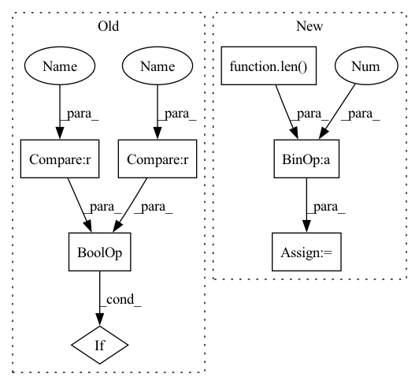

Pattern ID :32473
Before Change
anchor_embedding = run_inference(anchor, encoder)
pos_embedding = run_inference(pos, encoder)
neg_embedding = run_inference(neg, encoder)
if ((anchor_embedding is None) or
(pos_embedding is None) or
(neg_embedding is None)) :
// Some utterances might be smaller than a single sliding window.
continue
labels.append(1)After Change
fetcher = TripletScoreFetcher(spk_to_utts, encoder, num_eval_triplets)
with multiprocessing.Pool(myconfig.NUM_PROCESSES) as pool:
while num_eval_triplets > len(labels) // 2:
label_score_pairs = pool.map(fetcher, range(
num_eval_triplets - len( labels) // 2 ))
for triplet_labels, triplet_scores in label_score_pairs:
labels += triplet_labels
scores += triplet_scoresIn pattern: SUPERPATTERN
Frequency: 3
Non-data size: 7
Instances Fragment ID: 94659766
Project Name: wq2012/speakerrecognitionfromscratch
Commit Name: a93d8ddbd387c75b3eb58399b724b95f61e51a24
Time: 2022-05-10
Author: quanw@google.com
File Name: evaluation.py
M Class Name: AnonimousClass
N Class Name: AnonimousClass
M Method Name: compute_scores(2)
N Method Name: compute_scores(2)
M Parent Class:
N Parent Class:
M File Name: evaluation.py
N File Name: evaluation.py
M Start Line: 38
M End Line: 58
N Start Line: 67
N End Line: 78
Before Change
anchor_embedding = run_inference(anchor, encoder)
pos_embedding = run_inference(pos, encoder)
neg_embedding = run_inference(neg, encoder)
if ((anchor_embedding is None) or
(pos_embedding is None) or
(neg_embedding is None)) :
// Some utterances might be smaller than a single sliding window.
continue
labels.append(1)After Change
fetcher = TripletScoreFetcher(spk_to_utts, encoder, num_eval_triplets)
with multiprocessing.Pool(myconfig.NUM_PROCESSES) as pool:
while num_eval_triplets > len(labels) // 2:
label_score_pairs = pool.map(fetcher, range(
num_eval_triplets - len( labels) // 2 ))
for triplet_labels, triplet_scores in label_score_pairs:
labels += triplet_labels
scores += triplet_scores Fragment ID: 94659767
Project Name: wq2012/speakerrecognitionfromscratch
Commit Name: a93d8ddbd387c75b3eb58399b724b95f61e51a24
Time: 2022-05-10
Author: quanw@google.com
File Name: evaluation.py
M Class Name: AnonimousClass
N Class Name: AnonimousClass
M Method Name: compute_scores(2)
N Method Name: compute_scores(2)
M Parent Class:
N Parent Class:
M File Name: evaluation.py
N File Name: evaluation.py
M Start Line: 38
M End Line: 58
N Start Line: 67
N End Line: 78
Before Change
"Requires distributed package to be available")
rank = dist.get_rank() - 1
if rank >= num_replicas or rank < 0 :
raise ValueError("Invalid rank {}, rank should be in the interval"
" [0, {}]".format(rank, num_replicas - 1))
After Change
self.num_replicas = num_replicas
self.rank = rank
self.epoch = 0
self.num_samples = int(math.ceil(len( self.dataset) * 1.0 / self.num_replicas))
self.total_size = self.num_samples * self.num_replicas
self.shuffle = shuffle
Fragment ID: 94659778
Project Name: smilelab-fl/fedlab
Commit Name: ad41fdfcaa0df3e84a44fe7bf0ebfd7b7ae2bf5c
Time: 2021-08-02
Author: 928255708@qq.com
File Name: fedlab_utils/dataset/sampler.py
M Class Name: FedDistributedSampler
N Class Name: FedDistributedSampler
M Method Name: __init__(5)
N Method Name: __init__(5)
M Parent Class: torch.utils.data.Sampler
N Parent Class: torch.utils.data.Sampler
M File Name: fedlab_utils/dataset/sampler.py
N File Name: fedlab_utils/dataset/sampler.py
M Start Line: 77
M End Line: 89
N Start Line: 71
N End Line: 80
Before Change
raise ValueError(""base_lod" must be specified with tree_type == "quad"")
self._init_from_octree(base_lod)
elif tree_type == "geometric":
if max_grid_res is None or min_grid_res is None :
raise ValueError(""max_grid_res" must be specified with tree_type == "geometric"")
self._init_from_geometric(min_grid_res, max_grid_res)
else:After Change
// Feature Structure - setup grid LODs
self.resolutions = resolutions
self.num_lods = len( resolutions)
self.active_lods = [x for x in range(self.num_lods)]
self.max_lod = self.num_lods - 1
self.codebook_size = 2 ** self.codebook_bitwidth
self.codebook = nn.ParameterList([])
for res in resolutions: Fragment ID: 94659768
Project Name: nvidiagameworks/kaolin-wisp
Commit Name: 5d3173c9d2d4e2c8d8da3e809639515bf73a2225
Time: 2023-01-05
Author: 9556101+orperel@users.noreply.github.com
File Name: wisp/models/grids/hash_grid.py
M Class Name: HashGrid
N Class Name: HashGrid
M Method Name: __init__(8)
N Method Name: __init__(12)
M Parent Class: BLASGrid
N Parent Class: BLASGrid
M File Name: wisp/models/grids/hash_grid.py
N File Name: wisp/models/grids/hash_grid.py
M Start Line: 30
M End Line: 92
N Start Line: 30
N End Line: 87